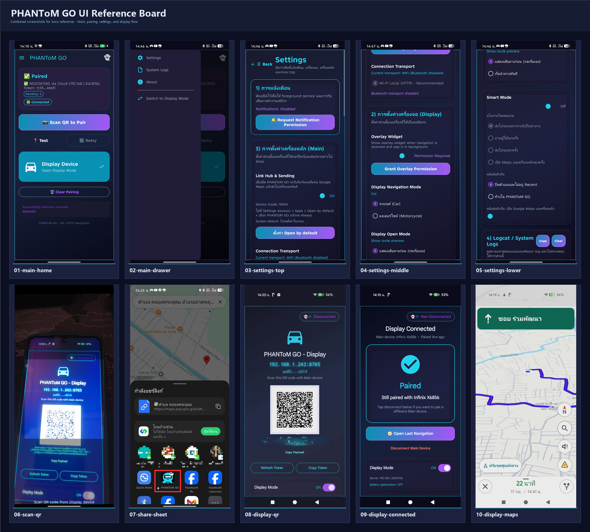

PHANToM GO ช่วยส่งปลายทางจากมือถือเครื่องหลัก ไปยังมือถือหรือแท็บเล็ต Android อีกเครื่องที่ใช้เป็นจอแสดงแผนที่บนรถ จับคู่ด้วย QR code ไม่ต้องสมัครสมาชิก และตอนนี้มี Web App สำหรับใช้งานผ่านเบราว์เซอร์บน iPhone หรืออุปกรณ์ที่ไม่สะดวกติดตั้ง APK ด้วย

เก็บมือถือหลักไว้กับตัว แล้วใช้มือถือหรือแท็บเล็ต Android เครื่องเก่าเป็นจอแสดงแผนที่แทน ช่วยลดความเสี่ยงจากแดด ความร้อน และฝน
เมื่อคุณกด Share จากเครื่องหลัก ปลายทางจะถูกส่งไปยังเครื่องจอทันทีผ่าน cloud pairing และ route relay โดยไม่ต้องให้ผู้ใช้สมัครสมาชิก
เหมาะกับไรเดอร์และงานหลายออเดอร์ เพราะแยกเครื่องกดงานออกจากเครื่องดูแผนที่ได้อย่างชัดเจน
เปิด PHANToM GO บนเครื่องที่ใช้เป็นจอติดรถ แล้วเข้า Display Mode เพื่อให้ระบบสร้าง QR code สำหรับจับคู่
ใช้กล้องของเครื่องหลักสแกน QR code จากเครื่องจอ ระบบจะเชื่อมต่อให้ทันทีโดยไม่ต้องล็อกอิน
ค้นหาปลายทางบน Google Maps หรือแอปอื่น แล้วกด Share ไปที่ PHANToM GO จากนั้นเครื่องจอจะเปิดเส้นทางให้ทันที
PHANToM GO ไม่ใช่แค่การ mirror หน้าจอ แต่มันคือ workflow ที่ออกแบบใหม่ให้ Main Device ใช้จัดการงานและข้อมูล ส่วน Display Device ใช้แสดงแผนที่อย่างเดียว ช่วยให้ทั้งการนำทางและการทำงานลื่นขึ้นพร้อมกัน
วิดีโอนี้ช่วยอธิบาย flow ของ PHANToM GO ตั้งแต่การจับคู่ด้วย QR code ไปจนถึงการส่งปลายทางจาก Main Device ไปยัง Display Device เพื่อให้คุณเห็นการใช้งานจริงก่อนติดตั้ง
เริ่มจากเปิด Display Mode แล้วใช้เครื่องหลักสแกน QR code
แชร์ลิงก์แผนที่จากเครื่องหลัก แล้วจอจะเปิด Google Maps ให้โดยอัตโนมัติ
หน้าจอจริงของ PHANToM GO ตั้งแต่ Pairing ไปจนถึงการเปิดแผนที่บนเครื่องจอ
ถ้าอุปกรณ์ฝั่งใดฝั่งหนึ่งไม่สะดวกติดตั้ง APK คุณสามารถใช้ PHANToM GO ผ่านเบราว์เซอร์ได้ โดยมีหน้า Home, Display และ Settings อยู่ในหน้าเดียว รองรับการจับคู่กับ APK หรือ browser อีกฝั่งแบบทีละคู่
เปิดใช้งานบน Safari หรือเบราว์เซอร์มือถือได้ทันที โดยไม่ต้องติดตั้งแอปเพิ่ม
เมื่อมีเส้นทางใหม่ ระบบจะขึ้น popup กลางจอ แล้วแตะเพื่อเปิด Google Maps ตามโหมดรถยนต์หรือมอเตอร์ไซต์ที่ตั้งไว้
เหมาะสำหรับผู้ใช้ iOS หรือเครื่องที่ต้องการลองใช้งานเร็ว ๆ โดยไม่ติดตั้ง APK
กดปุ่ม Download APK จากหน้านี้ แล้วอนุญาตการติดตั้งจากแหล่งภายนอกถ้าระบบถาม
เครื่องแรกเป็น Main Device สำหรับค้นหาและแชร์เส้นทาง อีกเครื่องเป็น Display Device สำหรับแสดง Google Maps บนรถ
ครั้งแรกที่เปิดแอป ระบบจะพา setup สิทธิ์ที่จำเป็น เช่น กล้อง, การแจ้งเตือน, Overlay และการประหยัดพลังงาน
บนเครื่องจอให้เข้า Display Mode แล้วใช้เครื่องหลักสแกน QR code จากนั้นแชร์ลิงก์แผนที่ไปที่ PHANToM GO ได้ทันที
ใช้สแกน QR code ตอนจับคู่ Main และ Display
ช่วยให้ foreground service และการเชื่อมต่อทำงานเสถียร
ใช้สำหรับ widget ลอยบนเครื่องจอในบางกรณี
ช่วยลดโอกาสที่ Android จะปิดระบบทำงานเบื้องหลังของเครื่องจอ
รองรับ Android 6.0 ขึ้นไป และให้ผลลัพธ์ดีที่สุดเมื่อใช้ Main Device กับ Display Device คนละเครื่องอย่างชัดเจน
ดาวน์โหลด PHANToM GO แล้วเปลี่ยนมือถือ Android เครื่องเก่าให้กลายเป็นจอติดรถที่ใช้งานได้จริง ทั้งสำหรับคนทั่วไปและไรเดอร์ที่ต้องวิ่งงานหลายจุดในแต่ละวัน
Current Stable: v1.0.16 • Android 6.0+ • Browser Web App Available